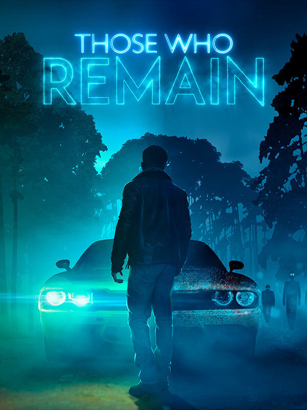

Those Who Remain
Those Who Remain
Details
|  | |
| Playtime | Not Played |
| Last Activity | Never |
| Added | 2/16/2022 17:42:11 |
| Modified | 2/16/2022 17:42:32 |
| Completion Status | Not Played |
| Library | Steam |
| Source | Steam |
| Platform | PC (Windows) |
| Release Date | 5/28/2020 |
| Community Score | 47 |
| Critic Score | 55 |
| User Score | |
| Genre | Adventure Indie |
| Developer | Camel 101 |
| Publisher | Camel 101 |
| Feature | Single Player |
| Links | PCGamingWiki Official site GOG Database HowLongToBeat IGDB IsThereAnyDeal ProtonDB SteamDB MobyGames |
| Tag | |
Description
As the lights go out, the embers of darkness are stoked in the sleepy town of Dormont.
Whispers of disappearances carry through the town as a burgeoning, uneasy and irrational fear begins to spread and darkness comes to be an unwelcome reflection to Those Who Remain.
Some mistakes should never happen, not when your life is complete – and yet they do. Edward had the good life, a beautiful wife and the perfect little girl, yet finds himself several whiskeys down and driving through the night of Dormont to end his secret affair - in a bid to fix his mistakes.
As Edward pulls into the Golden Oak Motel, he is unaware just how much this night will change his life…
The horrors and darkness that thrive in the corner of every eye are torn loose…
Those Who Remain places you in an up-close, psychological horror story set in the sleepy town of Dormont – a town in a spiralling split from the fabric of reality, warped by darkness and the deeds of the Citizens who reside.
Confront the uncomfortable horrors reflected by the darkness and survive the night of Dormont as Edward is confronted with a test of his sanity, morality and the shadows of evil that lurks below.


Whispers of disappearances carry through the town as a burgeoning, uneasy and irrational fear begins to spread and darkness comes to be an unwelcome reflection to Those Who Remain.
Some mistakes should never happen, not when your life is complete – and yet they do. Edward had the good life, a beautiful wife and the perfect little girl, yet finds himself several whiskeys down and driving through the night of Dormont to end his secret affair - in a bid to fix his mistakes.
As Edward pulls into the Golden Oak Motel, he is unaware just how much this night will change his life…
The horrors and darkness that thrive in the corner of every eye are torn loose…
Those Who Remain places you in an up-close, psychological horror story set in the sleepy town of Dormont – a town in a spiralling split from the fabric of reality, warped by darkness and the deeds of the Citizens who reside.
Confront the uncomfortable horrors reflected by the darkness and survive the night of Dormont as Edward is confronted with a test of his sanity, morality and the shadows of evil that lurks below.
Darkness Has Eyes
Navigate the encroaching darkness and manipulate light sources to clear paths through the mysteries of Dormont. To survive, you’ll need to stay in the light by any means.Worlds Torn Apart
Explore two interconnected dimensions as you move between Dormont and a strange alternate reality to solve thought-provoking puzzles and unlock the mysteries held within the dark.Conscience of Choice
Choose to condemn or reprieve the lost souls of Dormont and their cursed trove of secrets, as you make tough morale decisions that will determine the fate of Edward, through multiple different endings.Savour your Sanity
Discover an up-close psychological thriller wrapped in a deeply human story which explores family, loss, mistakes and how real people can be haunted by more than just demons in the dark.Unique Atmospheric Horror
Immerse yourself in a story-driven adventure inspired by classic supernatural film and TV series that presents a deeply atmospheric alternative horror experience.